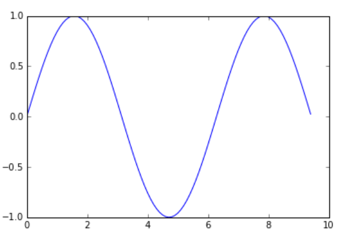
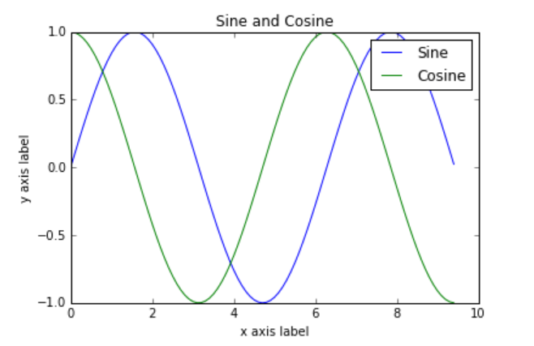
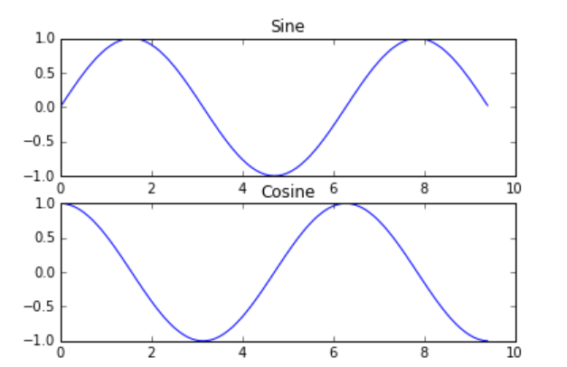

Python tutorial¶
约 571 个字 296 行代码 预计阅读时间 6 分钟
Abstract
摘自cs231n的Python Numpy Tutorial：https://cs231n.github.io/python-numpy-tutorial/
Basic Python¶
Basic data types¶
Numbers¶
Integers and floats work as you would expect from other languages:
x = 3
print(type(x)) # Prints "<class 'int'>"
print(x) # Prints "3"
print(x + 1) # Addition; prints "4"
print(x - 1) # Subtraction; prints "2"
print(x * 2) # Multiplication; prints "6"
print(x ** 2) # Exponentiation; prints "9"
x += 1
print(x) # Prints "4"
x *= 2
print(x) # Prints "8"
y = 2.5
print(type(y)) # Prints "<class 'float'>"
print(y, y + 1, y * 2, y ** 2) # Prints "2.5 3.5 5.0 6.25"
Note
Unlike many languages, Python does not have unary increment(x++) of decrement(x--) operators.
Booleans¶
Python implements all of the usual operators for Boolean logic, but uses English words rather than symbols
t = True
f = False
print(type(t)) # Prints "<class 'bool'>"
print(t and f) # Logical AND; prints "False"
print(t or f) # Logical OR; prints "True"
print(not t) # Logical NOT; prints "False"
print(t != f) # Logical XOR; prints "True"
Strings¶
hello = 'hello' # String literals can use single quotes
world = "world" # or double quotes; it does not matter.
print(hello) # Prints "hello"
print(len(hello)) # String length; prints "5"
hw = hello + ' ' + world # String concatenation
print(hw) # prints "hello world"
hw12 = '%s %s %d' % (hello, world, 12) # sprintf style string formatting
print(hw12) # prints "hello world 12"
String objects have a bunch of useful methods, for example:
s = "hello"
print(s.capitalize()) # Capitalize a string; prints "Hello"
print(s.upper()) # Convert a string to uppercase; prints "HELLO"
print(s.rjust(7)) # Right-justify a string, padding with spaces; prints " hello"
print(s.center(7)) # Center a string, padding with spaces; prints " hello "
print(s.replace('l', '(ell)')) # Replace all instances of one substring with another; prints "he(ell)(ell)o"
print(' world '.strip()) # Strip leading and trailing whitespace; prints "world"
Containers¶
Lists¶
A list is the Python equivalent of an array, but is resizeable and can contain elements of different types
xs = [3, 1, 2] # Create a list
print(xs, xs[2]) # Prints "[3, 1, 2] 2"
print(xs[-1]) # Negative indices count from the end of the list; prints "2"
xs[2] = 'foo' # Lists can contain elements of different types
print(xs) # Prints "[3, 1, 'foo']"
xs.append('bar') # Add a new element to the end of the list
print(xs) # Prints "[3, 1, 'foo', 'bar']"
x = xs.pop() # Remove and return the last element of the list
print(x, xs) # Prints "bar [3, 1, 'foo']"
Slicing: In addition to accessing list elements one at a time, Python provides concise syntax to access sublists; this is known as slicing:
nums = list(range(5)) # range is a built-in function that creates a list of integers
print(nums) # Prints "[0, 1, 2, 3, 4]"
print(nums[2:4]) # Get a slice from index 2 to 4 (exclusive); prints "[2, 3]"
print(nums[2:]) # Get a slice from index 2 to the end; prints "[2, 3, 4]"
print(nums[:2]) # Get a slice from the start to index 2 (exclusive); prints "[0, 1]"
print(nums[:]) # Get a slice of the whole list; prints "[0, 1, 2, 3, 4]"
print(nums[:-1]) # Slice indices can be negative; prints "[0, 1, 2, 3]"
nums[2:4] = [8, 9] # Assign a new sublist to a slice
print(nums) # Prints "[0, 1, 8, 9, 4]"
Loops
If you want access to the index of each element within the body of a loop, use the built-in enumerate function:
animals = ['cat', 'dog', 'monkey']
for idx, animal in enumerate(animals):
print('#%d: %s' % (idx + 1, animal))
List comprehensions
nums = [0, 1, 2, 3, 4]
squares = []
for x in nums:
squares.append(x**2)
# list comprehensions can make this code above simpler
squares = [x ** 2 for x in nums]
print(squares) # Prints [0, 1, 4, 9, 16]
Dictionaries¶
A dictionary stores (key, value) pairs
d = {'cat': 'cute', 'dog': 'furry'} # Create a new dictionary with some data
print(d['cat']) # Get an entry from a dictionary; prints "cute"
print('cat' in d) # Check if a dictionary has a given key; prints "True"
d['fish'] = 'wet' # Set an entry in a dictionary
print(d['fish']) # Prints "wet"
# print(d['monkey']) # KeyError: 'monkey' not a key of d
print(d.get('monkey', 'N/A')) # Get an element with a default; prints "N/A"
print(d.get('fish', 'N/A')) # Get an element with a default; prints "wet"
del d['fish'] # Remove an element from a dictionary
print(d.get('fish', 'N/A')) # "fish" is no longer a key; prints "N/A"
Loops: It is easy to iterate over the keys in a dictionary
d = {'person': 2, 'cat': 4, 'spider': 8}
for animal in d:
legs = d[animal]
print('A %s has %d legs' % (animal, legs))
# Prints "A person has 2 legs", "A cat has 4 legs", "A spider has 8 legs"
If you want access to keys and their corresponding values, use the items method:
d = {'person': 2, 'cat': 4, 'spider': 8}
for animal, legs in d.items():
print('A %s has %d legs' % (animal, legs))
# Prints "A person has 2 legs", "A cat has 4 legs", "A spider has 8 legs"
Dictionary comprehensions: These are similar to list comprehensions, but allow you to easily construct dictionaries
nums = [0, 1, 2, 3, 4]
even_num_to_square = {x: x ** 2 for x in nums if x % 2 == 0}
print(even_num_to_square) # Prints "{0: 0, 2: 4, 4: 16}"
Tuples¶
A tuple is an (immutable) ordered list of values. A tuple is in many ways similar to a list; one of the most important differences is that tuples can be used as keys in dictionaries and as elements of sets, while lists cannot.
d = {(x, x + 1): x for x in range(10)} # Create a dictionary with tuple keys
t = (5, 6) # Create a tuple
print(type(t)) # Prints "<class 'tuple'>"
print(d[t]) # Prints "5"
print(d[(1, 2)]) # Prints "1"
Functions¶
We will often define functions to take optional keyword arguments
def hello(name, loud=False):
if loud:
print('HELLO, %s!' % name.upper())
else:
print('Hello, %s' % name)
hello('Bob') # Prints "Hello, Bob"
hello('Fred', loud=True) # Prints "HELLO, FRED!"
Classes¶
class Greeter(object):
# Constructor
def __init__(self, name):
self.name = name # Create an instance variable
# Instance method
def greet(self, loud=False):
if loud:
print('HELLO, %s!' % self.name.upper())
else:
print('Hello, %s' % self.name)
g = Greeter('Fred') # Construct an instance of the Greeter class
g.greet() # Call an instance method; prints "Hello, Fred"
g.greet(loud=True) # Call an instance method; prints "HELLO, FRED!"
Numpy¶
To use Numpy, we first need to import the numpy package:
Arrays¶
A numpy array is a grid of values, all of the same type, and is indexed by a tuple of nonnegative integers. The number of dimensions is the rank of the array; the shape of an array is a tuple of integers giving the size of the array along each dimension.
We can initialize numpy arrays from nested Python lists, and access elements using square brackets:
a = np.array([1, 2, 3])# Create a rank 1 array
print(type(a)) # Prints "<class 'numpy.ndarray'>"
print(a.shape) # Prints "(3,)"
print(a[0], a[1], a[2]) # Prints "1 2 3"
a[0] = 5 # Change an element of the array
print(a) # Prints "[5, 2, 3]"
b = np.array([[1,2,3],[4,5,6]]) # Create a rank 2 array
print(b.shape) # Prints "(2, 3)"
print(b[0, 0], b[0, 1], b[1, 0]) # Prints "1 2 4"
Numpy also provides many functions to create arrays:
a = np.zeros((2,2)) # Create an array of all zeros
print(a) # Prints "[[ 0. 0.]
# [ 0. 0.]]"
b = np.ones((1,2)) # Create an array of all ones
print(b) # Prints "[[ 1. 1.]]"
c = np.full((2,2), 7) # Create a constant array
print(c) # Prints "[[ 7. 7.]
# [ 7. 7.]]"
d = np.eye(2) # Create a 2x2 identity matrix
print(d) # Prints "[[ 1. 0.]
# [ 0. 1.]]"
e = np.random.random((2,2)) # Create an array filled with random values
print(e) # Might print "[[ 0.91940167 0.08143941]
# [ 0.68744134 0.87236687]]"
Array indexing¶
Silicing¶
Similar to Python lists, numpy arrays can be sliced. Since arrays may be multidimensional, you must specify a slice for each dimension of the array
# Create the following rank 2 array with shape (3, 4)
# [[ 1 2 3 4]
# [ 5 6 7 8]
# [ 9 10 11 12]]
a = np.array([[1,2,3,4], [5,6,7,8], [9,10,11,12]])
# Use slicing to pull out the subarray consisting of the first 2 rows
# and columns 1 and 2; b is the following array of shape (2, 2):
# [[2 3]
# [6 7]]
b = a[:2, 1:3]
# A slice of an array is a view into the same data, so modifying it
# will modify the original array.
print(a[0, 1]) # Prints "2"
b[0, 0] = 77 # b[0, 0] is the same piece of data as a[0, 1]
print(a[0, 1]) # Prints "77"
You can also mix integer indexing with slice indexing. However, doing so will yield an array of lower rank than the original array. Note that this is quite different from the way that MATLAB handles array slicing:
# Two ways of accessing the data in the middle row of the array.
# Mixing integer indexing with slices yields an array of lower rank,
# while using only slices yields an array of the same rank as the
# original array:
row_r1 = a[1, :] # Rank 1 view of the second row of a
row_r2 = a[1:2, :] # Rank 2 view of the second row of a
print(row_r1, row_r1.shape) # Prints "[5 6 7 8] (4,)"
print(row_r2, row_r2.shape) # Prints "[[5 6 7 8]] (1, 4)"
# We can make the same distinction when accessing columns of an array:
col_r1 = a[:, 1]
col_r2 = a[:, 1:2]
print(col_r1, col_r1.shape) # Prints "[ 2 6 10] (3,)"
print(col_r2, col_r2.shape) # Prints "[[ 2]
# [ 6]
# [10]] (3, 1)"
Datatypes¶
Every numpy array is a grid of elements of the same type. Numpy provides a large set of numeric datatypes that you can use to construct arrays. Numpy tries to guess a datatype when you create an array, but functions that construct arrays usually also include an optional argument to explicitly specify the datatype. Here is an example:
x = np.array([1, 2]) # Let numpy choose the datatype
print(x.dtype) # Prints "int64"
x = np.array([1.0, 2.0]) # Let numpy choose the datatype
print(x.dtype) # Prints "float64"
x = np.array([1, 2], dtype=np.int64) # Force a particular datatype
print(x.dtype) # Prints "int64"
Array math¶
x = np.array([[1,2],[3,4]], dtype=np.float64)
y = np.array([[5,6],[7,8]], dtype=np.float64)
# Elementwise sum; both produce the array
# [[ 6.0 8.0]
# [10.0 12.0]]
print(x + y)
print(np.add(x, y))
# Elementwise difference; both produce the array
# [[-4.0 -4.0]
# [-4.0 -4.0]]
print(x - y)
print(np.subtract(x, y))
# Elementwise product; both produce the array
# [[ 5.0 12.0]
# [21.0 32.0]]
print(x * y)
print(np.multiply(x, y))
# Elementwise division; both produce the array
# [[ 0.2 0.33333333]
# [ 0.42857143 0.5 ]]
print(x / y)
print(np.divide(x, y))
# Elementwise square root; produces the array
# [[ 1. 1.41421356]
# [ 1.73205081 2. ]]
print(np.sqrt(x))
Note that * is elementwise multiplication, not matrix multiplication. We instead use the dot function to compute inner products of vectors, to multiply a vector by a matrix, and to multiply matrices. dot is avaiable both as a function in the numpy module and as an instance method of array objects:
x = np.array([[1,2],[3,4]])
y = np.array([[5,6],[7,8]])
v = np.array([9,10])
w = np.array([11, 12])
# Inner product of vectors; both produce 219
print(v.dot(w))
print(np.dot(v, w))
# Matrix / vector product; both produce the rank 1 array [29 67]
print(x.dot(v))
print(np.dot(x, v))
# Matrix / matrix product; both produce the rank 2 array
# [[19 22]
# [43 50]]
print(x.dot(y))
print(np.dot(x, y))
sum and T function:
x = np.array([[1,2],[3,4]])
print(np.sum(x)) # Compute sum of all elements; prints "10"
print(np.sum(x, axis=0)) # Compute sum of each column; prints "[4 6]"
print(np.sum(x, axis=1)) # Compute sum of each row; prints "[3 7]"
print(x.T) # Prints "[[1 3]
# [2 4]]"
# Note that taking the transpose of a rank 1 array does nothing:
v = np.array([1,2,3])
print(v) # Prints "[1 2 3]"
print(v.T) # Prints "[1 2 3]"
Matplotlib¶
Plotting¶
The most important function in matplotlib is plot, which allows you to plot 2D data. Here is a simple example:
import numpy as np
import matplotlib.pyplot as plt
# Compute the x and y coordinates for points on a sine curve
x = np.arange(0, 3 * np.pi, 0.1)
y = np.sin(x)
# Plot the points using matplotlib
plt.plot(x, y)
plt.show() # You must call plt.show() to make graphics appear.

With just a little bit of extra work we can easily plot multiple lines at once, and add a title, legend, and axis labels:
# Compute the x and y coordinates for points on sine and cosine curves
x = np.arange(0, 3 * np.pi, 0.1)
y_sin = np.sin(x)
y_cos = np.cos(x)
# Plot the points using matplotlib
plt.plot(x, y_sin)
plt.plot(x, y_cos)
plt.xlabel('x axis label')
plt.ylabel('y axis label')
plt.title('Sine and Cosine')
plt.legend(['Sine', 'Cosine'])
plt.show()

Subplots¶
You can plot different things in the same figure using the subplot function
# Compute the x and y coordinates for points on sine and cosine curves
x = np.arange(0, 3 * np.pi, 0.1)
y_sin = np.sin(x)
y_cos = np.cos(x)
# Set up a subplot grid that has height 2 and width 1,
# and set the first such subplot as active.
plt.subplot(2, 1, 1)
# Make the first plot
plt.plot(x, y_sin)
plt.title('Sine')
# Set the second subplot as active, and make the second plot.
plt.subplot(2, 1, 2)
plt.plot(x, y_cos)
plt.title('Cosine')
# Show the figure.
plt.show()

创建日期: 2023年9月7日 20:59:26